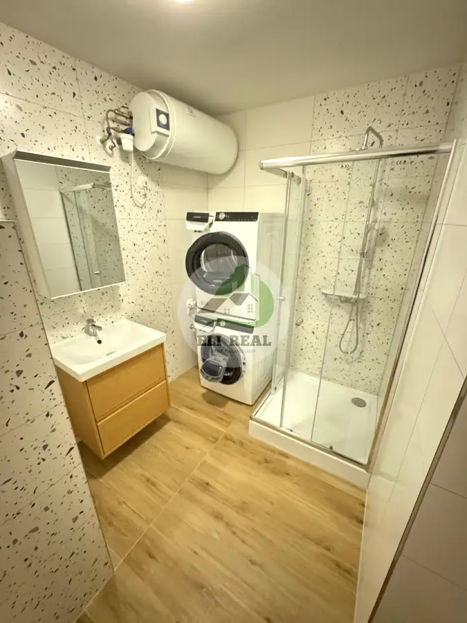
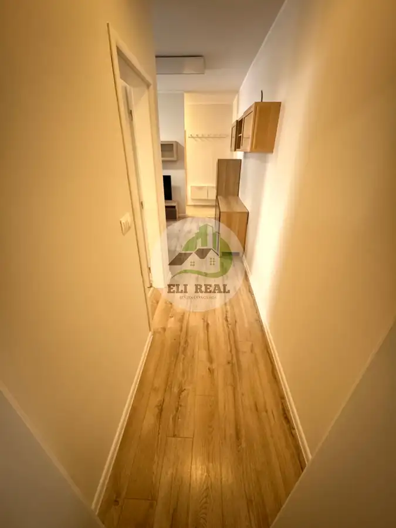
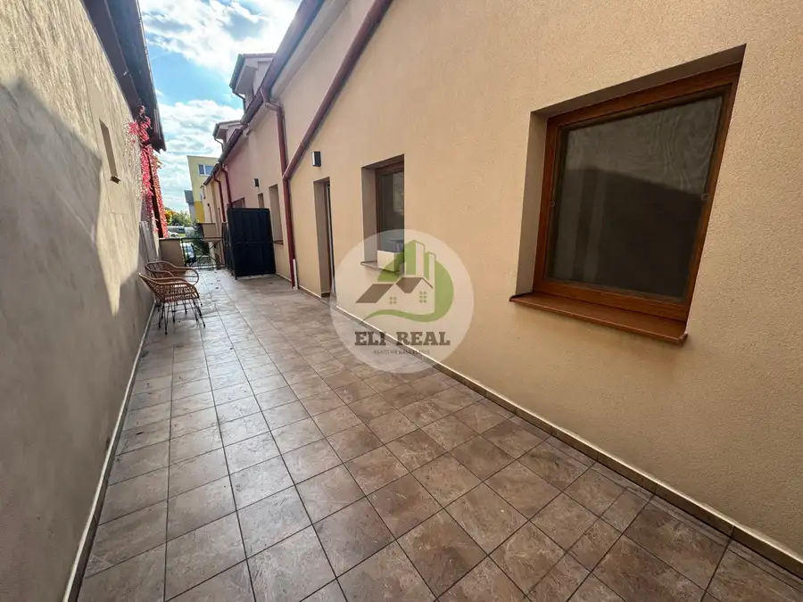

Na predaj 2-izbový byt 60m² + terasa 35 m² | Spišská Belá – námestie
Spišská Belá




- Dispozícia2-izbový
- Plocha95 m²
- Poschodie2. z 2
- StavKompletná rekonštrukcia
- VlastníctvoOsobné
O nehnuteľnosti
Na predaj exkluzívny kompletne zrekonštruovaný a zariadený 2-izbový byt o výmere 60m² s veľkou terasou 35 m², priamo na námestí v Spišskej Belej.Byt je po kompletnej rekonštrukcii a predáva sa zariadený. Súčasťou vybavenia je nová kuchynská linka so vstavanými spotrebičmi, priestranný U-čkový gauč, zariadená spálňa a kúpeľňa so sprchovacím kútom, práčkou a sušičkou, Komplet zariadenie je súčasťou predaja.Veľkou výhodou sú nízke mesačné náklady približne 100 €. Ohrev vody zabezpečuje samostatný bojler a vykurovanie je riešené najmodernejšími infrapanelmi.Byt sa nachádza v centre mesta, takže obchody, služby, autobusová zastávka a kompletná občianska vybavenosť sú v tesnej blízkosti.Výhody bytu:* 60 m² obytná plocha* terasa 35 m²* kompletná rekonštrukcia* zariadený byt* nová kuchynská linka so spotrebičmi* práčka + sušička* samostatný bojler* infrapanely* nízke náklady cca 100 €/mesiac* poloha priamo na námestíVhodný na vlastné bývanie aj ako investícia na prenájom.V prípade záujmu o obhliadku ma kontaktujte :Ľubomír Sarna | ELI REAL0944 886 006sarna@elireal.sk
Parametre
- Bezpečnosť
- Bezpečnostné dvere
- Cena vrátane energií
- Nie
- Doprava
- Cyklistická infraštruktúra, Diaľkový autobus, Vlak
- Druh
- 2 izbový byt
- Dátum zverejnenia
- 07. 10. 2026
- Energetický certifikát budovy
- nie je
- Energie
- 100
- Podlažie
- 2
- Počet izieb / miestností
- 2
- Počet nadzemných podlaží
- 2
- Počet pivníc
- 1
- Počet spální
- 1
- Stav nehnuteľnosti
- Kompletná rekonštrukcia
- Telekomunikácie
- Optická sieť, Internet
- Terás
- 1
- Typ
- Predaj
- Typ konštrukcie
- Kamenná
- Vlastníctvo
- Osobné
- Vybavenie
- Terasa, Pivnica, Verejné parkovanie
- Vybavenie objektu
- Nadštandardné
- Vykurovanie
- Iné
- Zariadenie
- Zariadené kompletne
- Úžitková plocha
- 95 m²
Kde to je


Mohlo by Vás zaujímať
 PozemokNové
Cena na vyžádáníNa predaj pozemky NOVÁ LESNÁ - krásne bývanie ale aj ideálna investícia
Nová Lesná
600 m²
PozemokNové
Cena na vyžádáníNa predaj pozemky NOVÁ LESNÁ - krásne bývanie ale aj ideálna investícia
Nová Lesná
600 m²
 PozemokNové
Cena na vyžádáníSkvelá investícia pozemok na rodinný dom v obci Nová Lesná
Nová Lesná
600 m²
PozemokNové
Cena na vyžádáníSkvelá investícia pozemok na rodinný dom v obci Nová Lesná
Nová Lesná
600 m²
 PozemokNové
120 390 €21. Pozemok 814m2 na RD v Novej Lesnej
Nová Lesná
814 m²
PozemokNové
120 390 €21. Pozemok 814m2 na RD v Novej Lesnej
Nová Lesná
814 m²